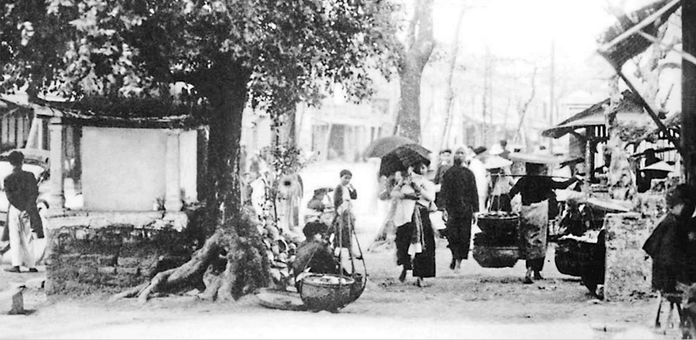

Contributors
Ingrid Chang is a fourth year undergraduate majoring in Cognitive Science with a minor in Digital Humanities and Geography. She is deeply interested in history and cultural studies, and was thrilled to have the opportunity to learn about Vietnamese history and ways to leverage technology in retelling it more effectively through a Digital Humanities course. For this project, she read and extracted from primary and secondary sources from the course data sandbox as well as external sources to contextualize the narrative the project wanted to tell. She assisted with the storyline writing of the intersectional experiences the project features.
Vinh Nguyen is a fourth year undergraduate studying Computer Science and Engineering with a technical breadth in Digital Humanities. He has an interest in learning about human history and culture, especially when it comes to his Vietnamese heritage. In taking this course, he hopes to solidify his understanding of Vietnam during this crucial era of Vietnamese history. For the project, he is utilizing his deeper understanding and experience of programming to handle the technical side. The hosting and development for the digital representation of our project was done entirely by him to allow the others to better focus on building the narrative and filtering through the datasets for visual assets.
Julia Tran is a fourth year undergraduate—second-year transfer from UCSB—majoring in Anthropology with a minor in Digital Humanities. She was deeply interested in taking this course after hearing that one of the Digital Humanities capstone courses would be about Vietnamese history. Despite growing up in an area with a vibrant Vietnamese-American community, she saw very little of this culture reflected back to her at the educational and institutional levels, and taking this course was a particularly exciting opportunity. Julia's contributions to this project involved combing through the Phong Hoa magazines and historical postcards for visual assets, including characters and backdrops against which the digital narrative can be told. She cleaned these assets to make transparent .png files for final use on the website.
Dustin Vu is a fourth-year (second-year transfer student) studying Sociology with a minor in Digital Humanities. His aim in taking this class was to adopt a deeper understanding of French-colonial Vietnam and examine how his prior understanding of Vietnam's history was influenced by colonial ideas, including his America-centric view of the Vietnam War. Dustin contributed to this project by conducting research and data collection on the Phong Hoa Vietnamese Comics primary source. He performed research by combing through issues 88-140 to analyze occurrences of Traditional vs. Western clothing, automobiles and trains vs. traditional forms of transportation, and settings of the comics. On top of that, he helped build the foundation of the project's narrative by collecting visual assets and developing the overall storyline.
Project Question
This project was created to understand the lived experiences of different social classes in Vietnam's colonial period. As we observed in this class, primary sources chartered by and written for the colonizers often distorted the reality of the Vietnamese people who lived during this time. In presenting the narratives of two different experiences of living under the French colonial era, we hope to explore the ways in which urbanization and increased industrialization influenced the people of different social classes within Vietnamese society. In other words, how did French Colonialism exacerbate class differences in Vietnam? In what ways did it do so and how were these differences portrayed in Phong Hoa?
Methodologies Statement
Our central primary source for this project were issues 88-140 of Phong-Hoa which were dated as March 9, 1934 to March 15, 1935. We chose to examine approximately one year to gain insights as to what life may have varied throughout one year, such as changes in school life, cyclical changes in employment, and clothing styles based on seasons.
Within our data set and data visualizations, we recognize that some of our categorizations such as using a binary to examine Traditional vs. Western clothing could be dismissive of clothing that might not necessarily fit in one category or the other, and could be considered both. For instance, in a number of the illustrations, we noticed many individuals were wearing clothes that resembled pajamas which are not exclusive to either the West or French-colonial Vietnam. Additionally, when categorizing the type of transportation in the comics, we maintained another binary categorization of "Cars/Trains vs. Walking/Traditional" transportation. If we could redo our data collection, we would create different categories of transportation including cars, trains, motorcycles, bikes, walking, or rickshaw. This would give us a more nuanced view of the type of transportation used in French-colonial Vietnam and reduce the ambiguity and vagueness of "traditional" forms of transportation.
Moreover, when examining the Phong Hoa comics as a body of work, we can see how potential biases from the original creators could skew representations of life in Vietnam in the 20th Century. We know that the writers and illustrators of the Phong Hoa magazine were all men. This fact helped us understand that in many of the illustrations we examined, women were often seen at home, spending less time outside, and rarely were shown working jobs. As a result, this gave us a limited understanding of the daily lives of women when we know that women were not always at home and were often working jobs just as frequently as men. Consequently, if we were given the opportunity to continue our research, we would look beyond the Phong Hoa magazine and find other primary and secondary sources to understand the role women played in greater society, beyond the home.
The textual primary sources we referred to helped us understand the context of the time period with much more nuance. "The Peasant Question" was the first detailed study of concrete peasant conditions in Vietnam by leading members of the Indochinese Communist Party, and thus provided a base for the elaboration of later Communist peasant policies." This source, while foundational, is inherently biased as it was written by leading members of the Indochinese Communist Party. Their perspective is likely to emphasize the hardships faced by the peasants to justify Communist policies and propaganda. Additionally, being a political document, it might lack the everyday nuances of peasant life and instead focus on the broader socio-political context. This project acknowledges these limitations by supplementing this source with visual data from Phong Hoa, which provides a different, perhaps less politically charged perspective. We aim to capture more granular details of daily life that might not be present in political analyses.
"How to Behave in Vietnam,” written in 1960, a speech by Tran Long Standard-Vacuum Oil Company Presented in Saigon at the Stanvac Executive Seminar and repeated for the Vietnamese-American Association. It was released at a time where Western presence in Vietnam was familiar and there is greater awareness of cultural differences as well as respect, revealing how Vietnamese culture is explained to foreigners, and what foreigners found different in Vietnam." This document is a product of its time, reflecting the perspectives and biases of Westerners trying to navigate Vietnamese culture. It may simplify or stereotype Vietnamese customs and reduce the complexity of cultural exchanges to mere etiquette lessons for Westerners. Additionally, it may lack the voice and perspective of the Vietnamese themselves, focusing instead on how Westerners perceive and interact with Vietnamese culture.
Environmental Scan & Contribution Statement
We hope that our project is able to reach a vast variety of audiences seeking to understand more about Vietnamese history beyond their perceptions of the Vietnam War and the period of colonization. Rather than focusing on the influence of the French alone, or the nation’s long history of war, we wanted our project to allow the viewer to pay attention to how different Vietnamese families lived in spite of the overwhelming amount of foreign interference. Of course, we are also aware that our project contributes to a vast literature and repository of research regarding the French colonial period in Vietnam, and we would be remiss if we did not acknowledge that our project contributes to this body of work. Nonetheless, we aim for anyone curious enough to learn more about the lived experiences of Vietnamese people of varying socioeconomic status during this time to engage with what we have created. Additionally, we wanted to take the 2-D and static illustrations from the Phong-Hoa and underscore that although these drawings were simply ink on paper, they were representations and exaggerations of real individuals, and by putting them in our digital narrative, we hope that we were able to bring them back to life.